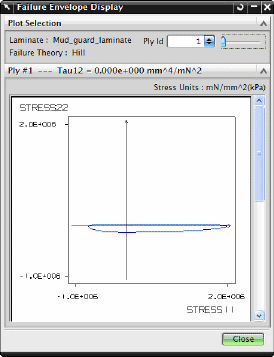

NX 复合层合板中的失效分析
在下列情况中，NX 复合层合板将使用层合板和胶合失效理论：
-
验证层合板强度
-
使用高级后处理工具来查看失效分析结果
-
优化层合板
可以计算：
-
层片与胶合失效指数
-
层片与胶合安全系数
-
层片与胶合强度比
失效分析属性
对于失效分析，您需要：
-
从层合板物理属性或拉伸实体层合板物理属性中选择一种失效理论
-
为实体层合板物理属性的各个层片选择一种层片失效理论以及胶合失效理论
-
输入胶合的许用应力值
-
指定所有材料的许用拉应力或应变
-
指定所有材料的许用压应力或应变
-
指定所有材料的许用剪切应力或应变
|
注释 |
许用应力和应变是材料可以承受的最大应力和应变，在各向同性材料和各向异性材料对话框的强度选项卡中的应力极限和应变极限组中指定它们。 |
如果您选择了 Tsai-Wu 理论，可以定义 Tsai-Wu 交互系数(F12)，如果未定义 Tsai-Wu 交互系数(F12)，或者指定的值未通过稳定性检查，软件将把它设为0.0。
|
注释 |
对于层片材料，许用应力和应变将通过指定的矩阵以及纤维材料值计算。 |
层片失效包络

失效包络绘图将辅助您查看层片在组合载荷下可以承受多少应力。
包络线的形状取决于：
-
失效理论
-
层片材料的许用强度
包络线的大小随剪切应力的数量变化。
剪切应力极限与选定层片材料的平面内剪切强度相对应。
